我们在第一章中讲了Φ的两个表达式，第一个是连分式，第二个是连根式：
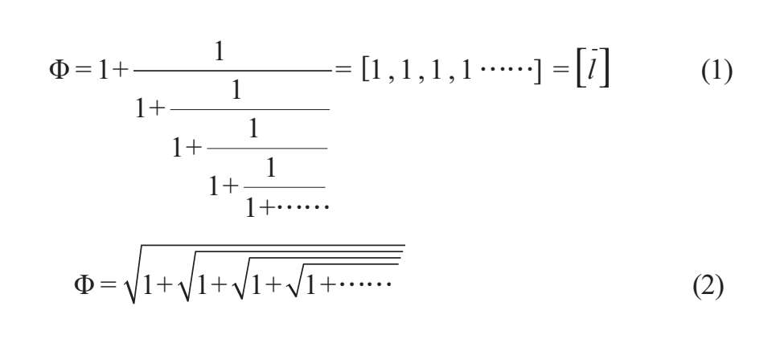
如果我们不断地对其中任何一个求解，只会得到分数的分数，平方根的平方根，无穷无尽地延续下去。一旦对此感到厌倦，不妨直接观察最后一项，就像通过显微镜观察最微小的细节。不管我们认为自己观察的有多深，我们始终会发现表达式丝毫没有改变。这种复杂的脑力训练是带领人们进入分形世界的大门。
1975年，拥有法国和波兰双重国籍的学者伯努瓦·曼德博（1924—2010）出版了《分形学：形态，概率和维度》（Fractals:Form,Chance and Dimension）一书，分形理论首次出现在世人面前。作者在前言中解释说，他根据拉丁语的形容词“fractus”创造出了“fractal object”（分形对象）和“fractal”（分形），这个拉丁词语意为“破碎的”，但翻译成“小数的”（fractional）会更好。七年后，曼德博在《大自然的分形几何学》（The Fractal Geometry of Nature）一书中将分形重新定义为一个集合，其中“豪斯多夫—贝塞科维奇维数严格大于其拓扑维数”。即使不能完全解释清楚，我们至少也会试着解释一下这个定义。
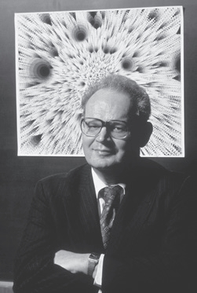
伯努瓦·曼德博，数学家，首创了分形的概念。
请记住，经典几何对象的维度都是整数，点是零维，直线是一维，平面是二维，空间是三维。另一方面，分形的维度不是整数维度。它介于两个整数维度之间，因此分形不能被看作拥有“正常”的体积和面积。在分形的世界里，非整数维度完全有可能存在。介于一维和二维之间的分形是个平面，不受曲线或一组直线的限制，但它却不会变成二维的平面（分形的周长无限长而且没有切线）。
科赫曲线具有分形的性质，通过不断重复的几何过程构造而来，稍后我们会看到这种曲线。与所谓的康托尔集一样，如果分形的维度介于零和一之间，即使点的数量无穷多并且彼此无限接近，它也只是一个沿直线排列却无法连成直线的点的集合。实际上，这是一个奇怪的几何悖论。
自相似性是分形的特点之一。换句话说就是，分形成比例地增大或减小而形状保持不变。无论观察距离的远近、观察程度的详略，我们所看到的图像都将始终如一。
雪花分形
因为科赫曲线或科赫分形酷似雪花，所以人们又将其称为“雪花”。科赫曲线是最早出现的分形图之一，由瑞典数学家海里格·冯·科赫（1870—1924）于1906年定义而来，时间远远早于分形概念的形成。下面我们来看一下科赫曲线的构成及其性质。
首先，我们将一个等边三角形的每条边平均分成三段。去掉每条边的中间段后，在该位置画一个向外凸出的等边三角形，边长等于去掉的中间段。
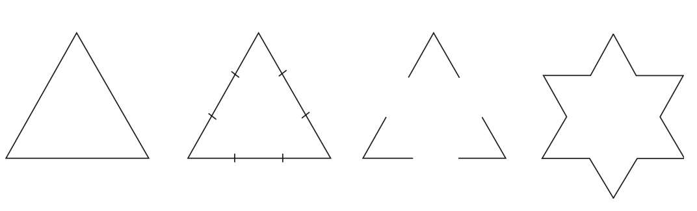
我们不断重复这个过程，每次画出的等边三角形不断变小。很快，纸笔就无法完成这项任务，但是计算机却可以很容易地继续画下去：
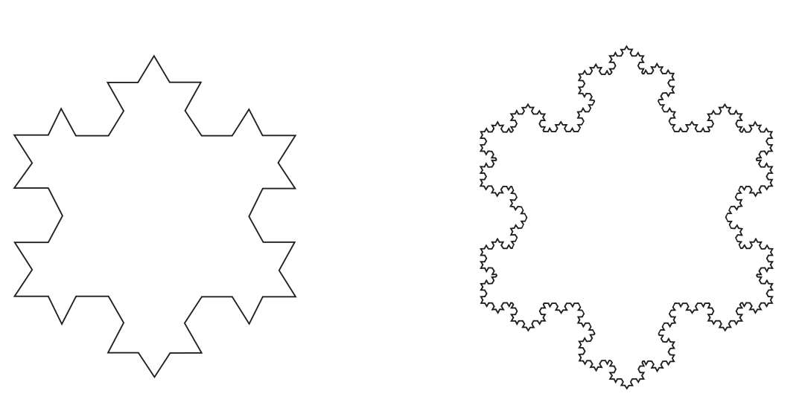
我们可以计算出科赫曲线的长度和面积。在每一步中，我们将长度为3的线段（包含三段）改为了另一条长度为4的线段（包含四段）：
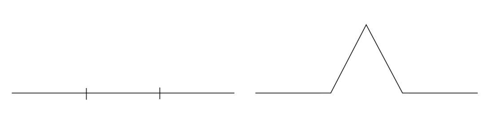
因此在每次的重复过程中，我们都要用最初的周长乘以4/3。这样，如果等边三角形最初的周长为L，重复n次后，科赫曲线的周长为：
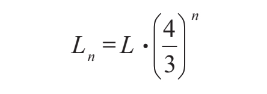
由于4/3大于1，因此这个表达式的值可以变得无限大！用数学专业术语来说，科赫曲线的周长Ln趋向于无穷大。我们可以无限地将其延长。
下面再来看一下科赫曲线的面积。假设初始三角形面积A=1：
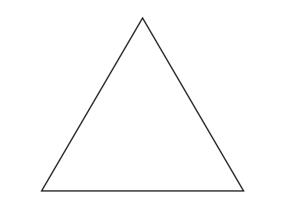
如果我们把它的三角形分成若干三角形，边长为最初三角形的1/3，那么一共得到九个小三角形。第一次的重复过程增加了三个小三角形，它们的面积是最初面积的1/3。因此，我们便得到了：
A1=1+1/3=4/3
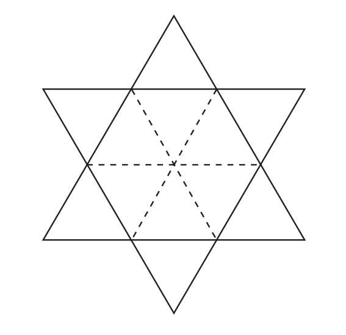
在接下来的重复过程中，我们在三角形T2的两边及其相邻的两边增加四个小三角形T3，这四个三角形的面积占T2的4/9，正好是A1面积的1/3，这样新增小三角形的总面积就是
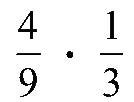
。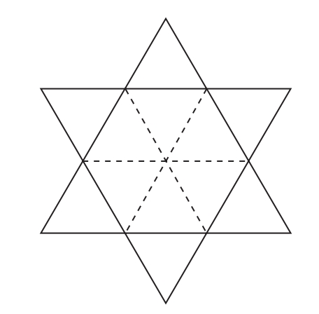
同理，在之后的每一次重复过程中，新增三角形的面积是上一次新增面积的4/9，这样就可以求出科赫曲线的总面积：
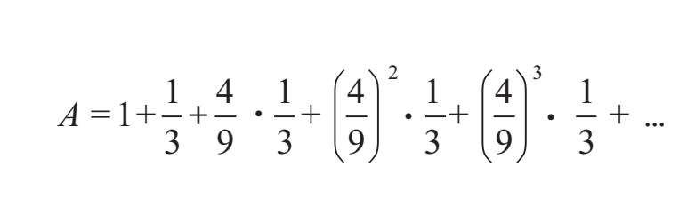
这个表达式可以通过提取公约数、加括号表示为无穷几何级数：
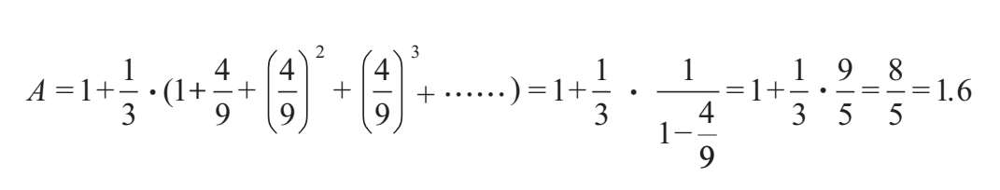
也就是说，经过无数次的重复后，我们得到了一条无限长的曲线，但它围成的面积仅是最初三角形的1.6倍。
科赫曲线介于一维和二维之间。请回想一下刚才的第一步：我们将长度为3的线段改为4。就直线来说，因为31=3，所以直线是一维。如果我们作一个边长为3的正方形，因为32=9，那它的面积是9，因此这个平面是二维。当我们将长度变为4，维度用d来表示，就得到3d=4。我们必须通过对数运算才能求出d：
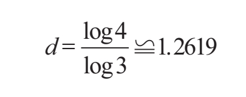
由此可见，这个维度不是整数，根据曼德博所说的拉丁语，它是“小数的”。
有一种从科赫曲线变化而来的分形我们十分熟悉，它是一种反向的科赫曲线。它的构造过程与科赫曲线相似，但却是在三角形的内部进行。一家日本汽车品牌正是通过这种方法创造了自己的标志。
但是，分形并不仅仅是一种奇怪的“数学工艺品”，大自然才是终极的分形。为了验证这一点，我们只需要对树做一下观察。树枝的生长模式可以用准确至极的分形来建模。对于许多树的分形模型来说，树枝始终以特定的角度从每个侧芽向外长出，长度为前一根树枝乘以因数f。因为有了因数f，树枝就不会重叠生长，也就是不会在彼此之上生长。如果我们想要建立真实有效的模型，就必须解决树枝重叠生长的问题。为了避免这种情况，我们需要知道因数f的极限。研究表明它与黄金比例有关，因为它必须符合f=1/Φ。
举例来说，如果我们将一开始从树上长出的“直线”替换为等边三角形，在这个三角形的每个顶点处放置另外的等边三角形，该三角形的边长等于最初三角形的边长乘以因数f（下图中，f=1/2），这样三角形状的树枝不会重叠而只是连接在一起，f的最大值也只能是f=1/Φ。
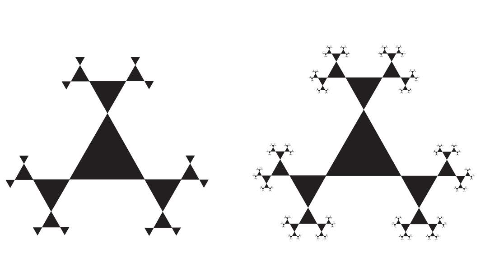
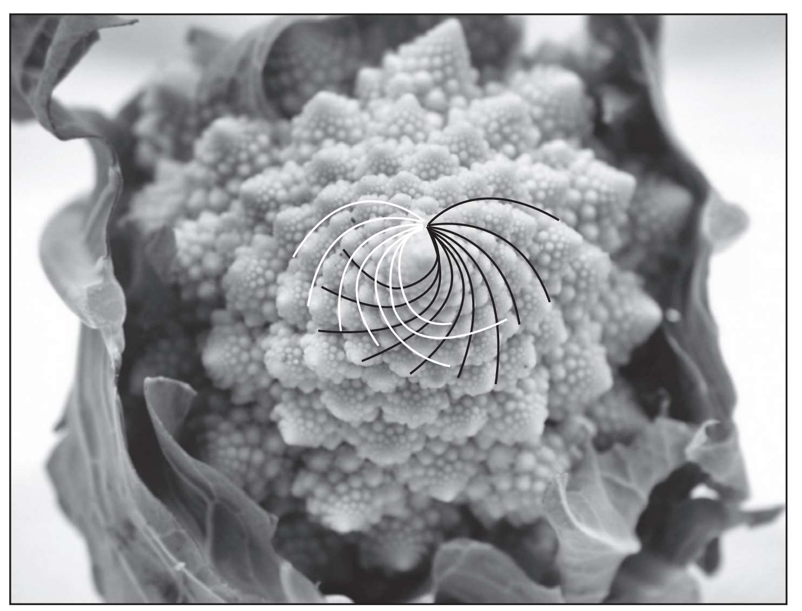
出现在罗马花椰菜上的逆时针螺线和顺时针螺线，两种螺线的数量是斐波那契数列的相邻项。
罗马花椰菜（俗称宝塔菜，是一种甘蓝的花）是最美的自然分形，因为我们不需要计算或数学公式就能清楚地观察到它的结构。如果我们切下其中任意一块，它的形状总是与整颗罗马花椰菜的形状相同。只要数一下顺时针和逆时针方向上的螺线，就可以证明它与黄金比例的关系。结果两个方向上的螺线数是斐波那契数列中的相邻项。逆时针方向上有8条螺线，顺时针方向上有13条螺线。